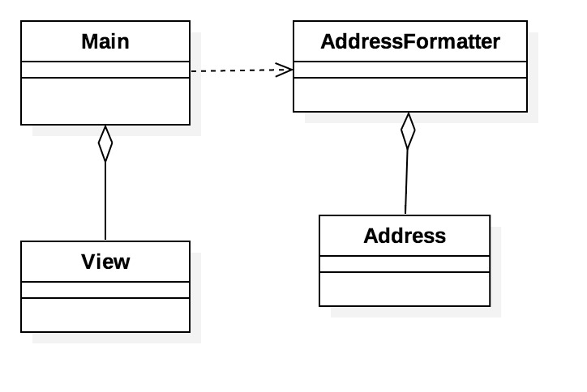

Design Document: USPS Mailing Address Formalization SystemTeam 2
March 22, 2016
(Last Updated: March 31, 2016 by Aaron Gershman)
Person Responsible for Document: Aaron Gershman
Purpose
This architectural design document aims to establish an overall architectural design for the USPS Mailing Address Formalization System. The design discussed in this document was formed based on the requirements document produced after the interview with the client, Jon Beck. This document offers use cases, a high level architectural design featuring a specific design style, and reasoning for design choices.
Please note: numbers here refer to the requirements document
-
1 Use Cases
-
i Bulk Address Processing (2.1.2, 3.2, 4)
-
Description
In bulk address processing, a user will provide a list of addresses that need to be formalized. After running the batch of addresses, the program will output all formalized addresses into a file and all addresses that could not be formalized into another. These two files will be placed in a chosen output location.
-
Flow
-
1 The user is presented a graphical interface with two options, bulk or single address formalization.
-
2 The user selects bulk address option and is prompted by the system to select a file location of addresses.
-
3 The user selects one file containing only addresses separated by commas.
-
4 The system prompts the user to select an output location for the two output files.
-
5 The user selects the output location and clicks begin.
-
6 The system processes all the addresses, formalizing them based on the United States Postal Service guidelines and verifying the addresses based on zip code.
-
7 The system writes all the addresses to the two comma separated output files. All addresses that could be formalized and verified in one document named accordingly, and all that could not in another.
-
8 The system will display a report of the batch process, including the number of formalized addresses and the number of addresses which could not be formalized or verified.
-
9 The user closes the report and the system displays the starting screen of the application with the two options for address formalization.
-
ii Single Address Processing (2.1.1, 3.1)
-
Description
In single address processing, a user will provide an address that needs to be formalized. After trying to formalize the address, the program will display the formalized address or a message saying it could not be verified. The user will be able to enter any number of addresses one after another, but only one at a time.
-
Flow
-
1 The user is presented a graphical interface with two options, bulk or single address formalization.
-
2 The user selects single address option.
-
3 The system prompts the user to enter an address by displaying a graphic with 5 input boxes. The input is street address, city, state, zip-5, and zip-4.
-
4 The user enters the address data into the input boxes, and selects the formalize button. Each box is required to have data entered into it.
-
5 The system formalizes the address based on the United States Postal Service guidelines
-
6 The system displays the formalized address along with the old address to the screen if the address could be formalized. If the address could not be formalized, the old address is displayed to the screen, along with any reason it could not be formalized.
-
7 The system presents options to the user to formalize a new address, change data in the previous address, or go to the home screen.
-
8 The user selects an option, and is returned to the desired location. If the user decides to change data in the previously entered address, the address input screen will be displayed with the previous address in the text fields. The user can repeat this process for any number of addresses, though only one can be entered at once.
-
2 Language: Python 3.4+
-
i Python code is generally more readable and clean compared to the verbosity of Java.
-
ii Python supports multi-paradigm styles, such as object-oriented, functional, etc.
-
iii Python does not require a special IDE to develop in. Something as simple as a text editor can produce viable code.
-
iv Python is a very portable language, and is supported on nearly all machines.
-
v There are numerous graphics packages for portable user interface design, such as Tkinter.
-
vi Python has a healthy and active open-source community which maintains a large number of tools, packages, and tutorials.
-
3 Architectural Pattern
- i
At a high-level overview, the "main-subroutine" architectural pattern works best because it is simple and modular. Each step in the process is a distinct subroutine. New features could easily added without interfering with existing structure.
- ii
Here is a UML diagram:

- iii
The bulk of the operations involving editing addresses will be done in the "AddressFormatter" class, which will aggregate addresses to be edited. After performing a series of methods on the address, the output will be a properly USPS formatted address.